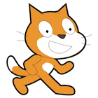
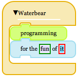

The Waterbear Welcomes You!
Waterbear is a toolkit for creating drag-and-drop programming languages, with some example languages you can play around with and learn from. The goal is to make it easy to wrap other existing languages with Waterbear blocks to create draggable, snappable syntaxes for them.
Waterbear is a toolkit for making programming more accessible and fun. Having a visual language means you don't have to focus on learning a syntax to start programming. Waterbear is good for kids, artists, and anyone who would like to make their computer do something new without having to become a "programmer" (although it could lead to that).
Waterbear's blocks are heavily inspired by MIT's Scratch language, but the goal is not to slavishly duplicate Scratch, or to create a programming language, but to create a visual syntax tool that can be used with a variety of languages and projects, and to make it as widely available as possible. Waterbear runs in a variety of web browsers, including Mobile Safari on the iPad.
 Waterbear's system of draggable, snappable blocks are built using clean HTML5, CSS3, and Javascript. The Javascript playground for Waterbear allows you to create Waterbear scripts, see the Javascript it will generate, and run it right in the browser.
Waterbear's system of draggable, snappable blocks are built using clean HTML5, CSS3, and Javascript. The Javascript playground for Waterbear allows you to create Waterbear scripts, see the Javascript it will generate, and run it right in the browser.
Waterbear is pre-alpha software, very raw, and in constant flux right now.
Why Waterbears?
[mostly via Wikipedia]Waterbears, also known as tardigrades, or moss piglets, are probably the most resilient creatures on Earth, able to survive extremes of heat and cold, pressure (high pressure and the vacuum of space), dehydration, radiation, environmental toxins. Since we want to be able to create code that is robust, they are an appropriate mascot. Also, they are cute.
Credits
- Dethe Elza founded the project and named it (blame him!)
- Dethe's kids, for helping test so many programming environments and great critics (and for the Waterbear mascot image above)
- Martyn Eggleton, for the Arduino blocks, good brainstorming, and using Waterbear to teach programming
- Blake Bourque, for Java blocks, troubleshooting, documentation and code contributions
- Christopher de Beer, for suggestions and bug fixes
- Steve Dekorte, Alex Payne, Bob Nystrom, Wolf Rentzsch, Victoria Wang, and Brian Leroux for the encouragement to make this real
- Everyone who worked on Scratch, the primary source of inspiration for this project
“It goes against the grain of modern education to teach children to program. What fun is there in making plans, acquiring discipline in organizing thoughts, devoting attention to detail and learning to be self-critical?”
—Alan Perlis
Play with Waterbear
Waterbear Community
Follow @Waterbearlang on Twitter
Discuss Waterbear on the mailing list
Fork Waterbear on Github
File an issue or feature request
Featured pages from the Wiki: